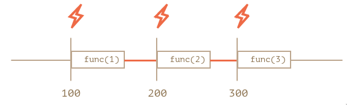
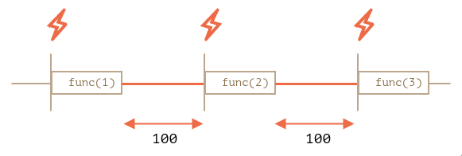

React quick notes
useCallback with no dependencies
The following function is wrapped in useCallback, but it doesn't have any dependencies.
const updateChildren = useCallback(
(id: string, item: ITreeItem, children: ITreeItem[]) => {
if (item.id === id) {
item.children.clear();
children.forEach((child) => item.children.set(child.id, child));
return;
}
for (const [, value] of item.children) {
updateChildren(id, value, children);
}
},
[]
);
- Purpose of
useCallbackdoes not depend on if you have dependencies or not. It's to ensure referential integrity. To get better performance. Every time your component re-render, a new instance of the function is created,useCallbackis just an addition which assigns the reference to another variable. - When you wrap a function with useCallback it actually memorizing(remember the last execution result) and the next time you call this function it will return the last result if none of the values in the dependent array is changed.
Nested setTimeout vs setInterval
Nested setTimeout allows to set the delay between the executions more precisely than setInterval.
let i = 1;
setInterval(function() {
func(i++);
}, 100);
let i = 1;
setTimeout(function run() {
func(i++);
setTimeout(run, 100);
}, 100);
setInterval the internal scheduler will run func(i++) every 100ms:

The real delay between func calls for setInterval is less than in the code.
That’s normal, because the time taken by func's execution consumes a part of the interval.
It is possible that func's execution turns out to be longer than we expected and takes more than 100ms.
In this case the engine waits for func to complete, then checks the scheduler and if the time is up, runs it again immediately.
In the edge case, if the function always executes longer than delay ms, then the calls will happen without a pause at all.
And here is the picture for the nested setTimeout:

The nested setTimeout guarantees the fixed delay (here 100ms).
That’s because a new call is planned at the end of the previous one.
Cannot assign to 'current' because it i a read-only property
When using React's useRef hook, if it is initialised with null default value, then tsserver will complain about the error.
The reason is described in this comment .
It's intentionally left readonly to ensure correct usage, even if it's not frozen. Refs initialized with null without specifically indicating you want to be able to assign null to it are interpreted as refs you want to be managed by React , i.e. React "owns" the current and you're just viewing it.
If you want a mutable ref object that starts with a null value, make sure to also give | null to the generic argument. That will make it mutable, because you "own" it and not React.
Difference between e.currentTarget and e.target
e.currentTargetis the element the event is attached to.e.targetis the element that triggers the event.
Difference between e.preventDefault and e.stopPropagation
e.preventDefaultwill stop the browser handling the event.e.stopPropagationwill stop event bubbling up to the parent elements.